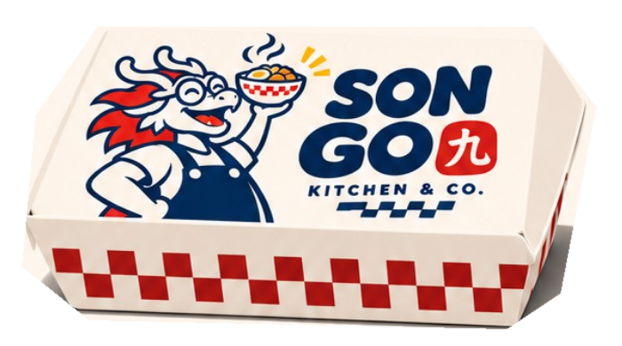

✳ Packaging & merch
SONGO
ON THE GO.
Identitas SONGO dibawa sampai ke kemasan: logo utama, maskot naga koki, checkerboard, merah, navy, dan cream.
Gambar di samping adalah mockup konsep yang dibagikan, bukan foto kemasan produksi atau produk aktual.

Visual direction
KEMASAN
PUNYA CERITA.
Maskot naga koki dan identitas warna SONGO membuat packaging terasa ramah, berani, dan mudah dikenali. Finalisasi ukuran, bahan, vendor, dan desain produksi menunggu konfirmasi SONGO.